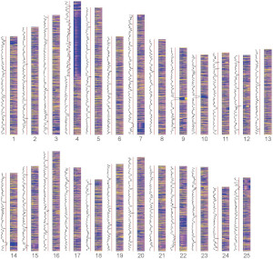

Research
Gene mutations or environmental factors such as infection or drugs can have genome-wide effects on gene expression levels across many different pathways. However, it is not always clear which of these perturbations can be buffered by the organism's compensatory mechanisms and which lead to detrimental outcomes as reflected in morphological changes or reduced health.
Our research focusses on investigating in vivo gene regulatory responses to challenges such as genetic mutations, chromatin disruption and infection. Specifically, we use our zebrafish mutant archive of ~43,000 alleles covering 60% of protein-coding genes, CRISPR/Cas9 mutagenesis and genome-wide sequencing approaches to understand the relationship between chromatin structure, transcriptional changes and phenotypic outcomes. For example, partial loss of function can have substantial effects on gene expression levels without gross morphological defects. This provides an opportunity to dissect gene regulatory networks and distinguish network-specific, but tolerated, gene expression changes from those that affect organismal development and health. We apply this approach in several areas:
- the role of heterochromatin maintenance in development and cancer
- gene regulatory networks underlying genetic compensation during neural crest differentiation
- common and distinct transcriptional responses to loss of skeletal muscle function
Furthermore, in collaboration with the laboratory of Lalita Ramakrishnan at the University of Cambridge, we are conducting a genetic screen for loci affecting susceptibility to M. marinum infection using our zebrafish mutant archive. We have also been awarded an NIH grant, together with Caroline Brennan at Queen Mary University London, to identify genes that influence addiction-related phenotypes in zebrafish.
Open Science
As a lab, we are committed to the principles of open science. We share our data and resources as widely as possible, often in advance of publication. For example:
- our archive of zebrafish mutant alleles is distributed via the Zebrafish International Resource Center (ZIRC) and/or the European Zebrafish Resource Center (EZRC)
- our sequencing data are always deposited in ArrayExpress and/or the European Nucleotide Archive
- our software is always distributed under a free software licence